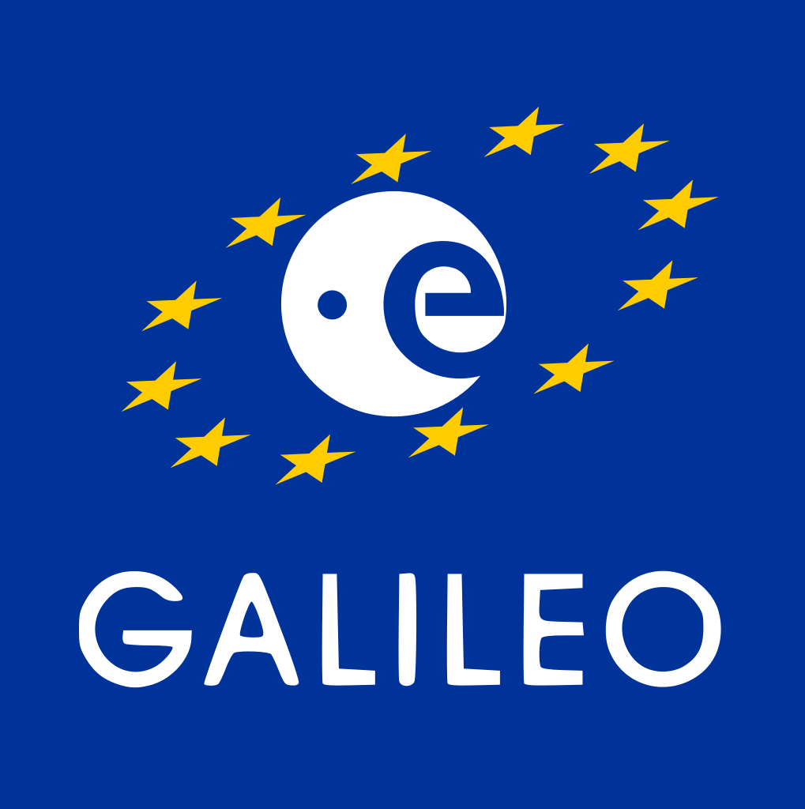
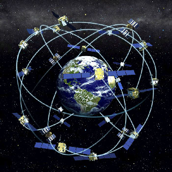

El Sistema de Comunicacions Galileu és un projecte de la Unió Europea amb un pressupost de 5.000 milions €.
Un dels seus objectius és proporcionar un sistema de posicionament d'alta precisió sobre la qual els països europeus puguin confiar, un altre és evitar la dependència d'Europa dels sistemes GPS y GLONASS. Galileo utilitzarà dos bases d'operacions a Europa, un a Munich, Alemanya i un altre a Fucino, Itàlia.
La finalització del sistema constarà de 30 satèl·lits (27 funcionant i 3 recanvis per si algun falla) i està programat per que estigui finalitzat i pugui començar a funcionar properament.
Galileu funciona a través d'una xarxa de 30 satèl·lits que orbiten a 23.222 km de la terra en els tres plans orbitals diferents. Mijtançant una tècnica coneguda com Multilateració, i gràcies a les senyals que rep dels satèl·lits, el receptor calcula la distància a la que està d'aquests a través del temps que tarda en arribar-li les diferents senyals. Per això, es molt important que la presició dels rellotges que tenen els satèl·lits sigui molt alta, el que s'aconsegueix mitjançant l'ús de rellotges atòmics.

Aquest sistema de comunicacions Europeu, ens aportarà "independència" dels altres sistemes de comunicacions d'altres països.
Oferirà cinc serveis diferents: